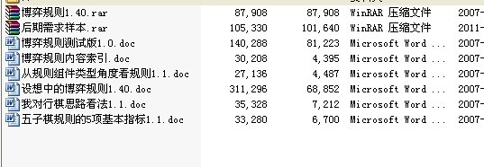

难道非要到大乱时才来大治？
#1 难道非要到大乱时才来大治？ 作者：灯塔连珠 发表时间：2012-5-24 13:36:30
最近论坛挺热闹，从世团赛没夺冠的事情开始牵出了很多是是非非。公说公有理，婆说婆有理，争论的不可开交，还爆出了很多不为人知的猛料，不知道这样的事情从长期来看还是短期来看对中国五子棋的发展是不是有好处，暂时我还是没看到。［ 小红眼镜 于 2012-5-24 13:50:28 时花20金币送鲜花一朵］
［ 山城刀客 于 2012-5-25 2:20:36 时花20金币送鲜花一朵］
［ 山城刀客 于 2012-5-25 2:20:46 时花20金币送鲜花一朵］
#2 Re:难道非要到大乱时才来大治？ 作者：灯塔连珠 发表时间：2012-5-24 13:42:45
凤凰涅槃，不破不立。#3 Re:难道非要到大乱时才来大治？ 作者：梧桐风 发表时间：2012-5-24 14:02:13
嗯，极地每次扯mm，您每次扯领导……［ 有志青年 于 2012-5-24 14:34:30 时花20金币送鲜花一朵］
#4 Re:难道非要到大乱时才来大治？ 作者：游戏人间 发表时间：2012-5-24 14:09:00
推荐戴晓涵的博弈规则。山口这种垃圾规则目前已经终结到只有几个开局能下了。不过博弈规则似乎复杂了一些，还需要进一步改进。但是像阉割到连换那种程度肯定不行。#5 Re:难道非要到大乱时才来大治？ 作者：有志青年 发表时间：2012-5-24 14:36:10
咋看有点像进了天涯杂谈了，或者接近凯迪了？已经涉及到体制问题了！
连国家都被定义了。
我们是小人物，还是谈些我们能做的事情！
#6 Re:难道非要到大乱时才来大治？ 作者：絕版賭徒 发表时间：2012-5-24 14:39:32

目录暂时暴光，通过小天前天40分钟的语音解释，规则适用于初学者及大师。打破了常规，让研究和棋谱知识成了学习五子棋的基础。可以控制棋谱及研究到15或20手之后无效，达到局面平衡。
其实9手后就可以避开研究，并能有效把局面打开，之前想如果一盘摆到9或15或20，那么局面会不会更容易和棋，其实不然。坐等小天公布
［此帖子已被 絕版賭徒 在 2012-5-24 14:58:19 编辑过］
#7 Re:难道非要到大乱时才来大治？ 作者：棋情 发表时间：2012-5-24 14:39:32
同意,山口规则确实很垃圾，能下的变化也就集中于那么几个开局，大半以上开局已成残废!!!其实就等于是给RIF规则加了件小马甲!!!
#8 Re:难道非要到大乱时才来大治？ 作者：絕版賭徒 发表时间：2012-5-24 14:42:04
大爷的，楼上和我发贴的时间，竟然是同时同分同秒，首次见过#9 Re:难道非要到大乱时才来大治？ 作者：有志青年 发表时间：2012-5-24 14:44:04
继续锁！
吵不出个天下太平，只会消耗自己的元气，增加对方的怨气！
先有为才有位！
做了很多事情了，是不错，做到位了吗？我们是不是还需要继续努力？我们是在等着被表扬一下才继续做？
矛盾无处不在，困难时时在眼前，让你鄙视的人常在耳边叽叽喳喳
我们选择停下脚步，与之辩论，不为错，可你耽误了前面的风景不是？
我们选择搁置争议，寻求共同发展，不为错，矛盾可以留给时间来解决
我们选择埋头钻研，两耳不闻窗外事，一心钻研五子棋，我们是因为五子棋本身而走在了一起。
我们还有其他的选择，但有些人选择了看热闹，插科打诨；有的人选择了振臂一呼，想争取一个新天地；还有的人选择了游走于各种角色之间寻找“细节”
那你选择了什么？